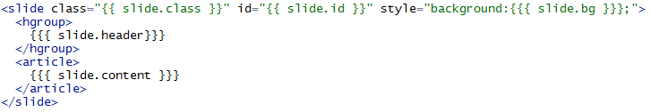

Customizing Slidify
Miguel Vázquez-Prada Baillet
Center for Epidemiology and Screening, Copenhaguen University
CUSTOMIZE SLIDIFY
Miguel Vázquez-Prada Baillet
Center for Epidemiology and Screening, Copenhaguen University
INTRO
slidify is an extremly powerful tool to convert any Rmd (R markdown) document to a beautiful and custom html5 presentation.
From Slides to a complete website, many different documents can be rendered changing only a few lines.
Have a tour into some examples following this link: slidify examples
Install slidify
To install slidify you will need to install in R , slidify and slidifyLibraries packages from github (the dev branch).
To do that you need to install devtools package to be able to run these commands:
require(devtools)
install_github("slidify","ramnathv","dev")
install_github("slidifyLibraries","ramnathv","dev")
Run Slidify
Open a new project in RStudio, or create a new directory where you will have your files.
Set the working directory in that folder:
setwd("path/to/folder")
Now run the command author("myname") which will create a directory called "myname":
author("myname")
You can download the examples from slidify examples to explore the code and get ideas.
The Beginning
The file index.Rmd will be created and in it you will have the YAML configuration, which looks like:
---
title :
subtitle :
author :
job :
framework : io2012 # {io2012, html5slides, shower, dzslides, ...}
highlighter : highlight.js # {highlight.js, prettify, highlight}
hitheme : tomorrow #
widgets : [] # {mathjax, quiz, bootstrap}
mode : selfcontained # {standalone, draft}
---
The Beginning
These first lines are YAML code to configure and pass some information to slidify. To begin to write your document you can fill this lines:
title :
subtitle:
author:
To make a slide for you document you can enter this text after that YAML code:
## The first Slide Title
The slide content
To create another slide, you only have to write :
---
as that is the slides "separator".
Basic Slide Structure
A slide has a title and a content They are created by slidify from this markdown code:
---
## side title
slide content
For example the next slide is created with this code:
---
## A slide example
This is an example of content.
1. simple
2. short
go to the next slide to see the result ->
A slide example
This is an example of content.
- simple
- short
How does it work?
The magic of slidify is happening in a few steps. In a slidify document (which is an Rmd document) there are 3 main types of code:
Markdown code:
**bold** , *italics*
R code:
```{r} 1+1 ```
"slidify" code :
--- .class1 #id3 bg:black
## title
*** =first
How does it work?
slidify code is parsed by slidify and transformed into html (as markdown and R code are, too).
To customize slidify, it is important to understand how the code is transformed into html.
The main structure
A slidify document is a page that contains slides
The page corresponds to all the document, and each slide is those pieces separated by ---
pages and slides have elements that are used to parse the code into html.
The beginning of our Rmd document (YAML code) is used to assign elements to the page:
---
author : John TwoLegs
...
...
---
is going to assign the page element "author" the value "John TwoLegs". In general, elements and their values are written as pairs :
element:value
The main structure
slide elements are assigned with this code :
--- &layout .class #id element:value
## slide header
slide content
*** =blockname
---
layout is the layout (template) used to render the slide.
class is the slide's class for the slide.
id is the slide's id.
after the "---" if we type ## the text following that will be the header element.
The text after the header will be the value of the content element.
If we want to specify a block in the slide, we do it by typing *** =blockname
It is always possible to use the rule of typing: element:value.
Parsing code
slidify will read the code we type, defining page and slide elements and assigning the values we typed.
For example if to make a slide we write this code :
--- &simple .dark #end bg:grey
## Custom Slidify
To customize ...
---
We will tell slidify to assing this values to this slide elements:
| element | value |
|---|---|
| layout | simple |
| class | dark |
| id | end |
| bg | grey |
| header | "Custom Slidify" |
| content | "To customize ..." |
Layouts
Once slidify finds elements and values, it will use those to make a document.
To do that, it will need a skeleton template to insert into it the values of the elements found.
Layouts are .html files (found in the "layouts" directory).
Here is an example of a simple layout used for a slide (called simple.html):

Layouts
For the example code for a slide :
--- &simple .dark #end bg:grey
## Custom Slidify
To customize ...
---
slidify will find the elements of the slide and their values, and parse them into the layout
(in this case simple.html) generating this html code:
<slide class="dark" id="end" style="background:blue;">
<hgroup>
Custom slidify
</hgroup>
<article>
To customize...
</article>
</slide>
Layouts
What slidify did is to replace { { slide.element } } by the value of that element.
For our example slide :
--- &simple .dark #end bg:grey
## Custom Slidify
To customize ...
---
| element | value | call in layout |
|---|---|---|
| class | dark | {{ slide.class }} |
| id | end | {{ slide.id }} |
| bg | grey | {{{ slide.bg }}} |
| header | Custom Slidify | {{{ slide.header }}} |
| content | To customize ... | {{{ slide.content }}} |
Layouts
Another way to type the elements and values is
--- {class: active, id: problem, bg:black }
Elements can have sub-elements. To code them we use :
{
id: showit
menu:
- {item: Home, href: index, icon: home}
- {item: "Start", href: start, icon: signin}
}
Here we have the element "menu" that have "item" "href" and "icon" as sub-elements. To call them in a layout we will code:
{{ # slide.menu } }
{{ item } } {{ href } } {{ icon } }
{{ /slide.menu } }
That is, to access sub-elements, we can "open" and "close" with {{ # } } {{ / } } and inside it, call the sub-elements with {{ } }
BLOCKS
We can define different blocks into the same slide, by typing :
*** =blockname
where blockname is the name of the block.
To call the content of that block in a layout, we will code:
{ { { slide.blockname.html } } }
For example, to have a two-column slide, we can write in this way:
--- &twocol
## two columns layout
*** =left
this is the left one.
*** =right
the right one.
BLOCKS
In the layout "towcol.html" we can code :
---
layout: slide
---
{ { { slide.content } } }
<div style='float:left;width:48%;' class='centered'>
{ { { slide.left.html } } }
</div>
<div style='float:right;width:48%;'>
{ { { slide.right.html } } }
</div>
and that will parse the "left" and "right" block into a html code.
adding .html to slide.left is ensuring that the element "left" is parsed as html with header and content (once parsed by markdown and sidify).
THE DECK LAYOUT
The default layout for the page (for the document) is deck.html or default.html Here is an example of it:

{ {> head }} is making that the file head.html is imported. This file is in the partials directory.
With { {> javascript }} and { {> titleslide }} we are importing the files "javascript.html" and "titleslide.html" from partials directory.
{ { page.assets.css}} contains the reference list to the css files in the assets/css directory.
ASSETS
Slidify is taking css and layouts from the folder in frameworks/fname . Those are the files that come with the framework used.
If we want to customize layouts, partials, and css, we can put them into assets/layouts, assets/partials , assets/css .
assets has priority over the framework files and will override their rules.
assets directory is also the place to include images, etc.
Calling { { page.url.assets }} in a layout or partial will give the route to the assets directory.